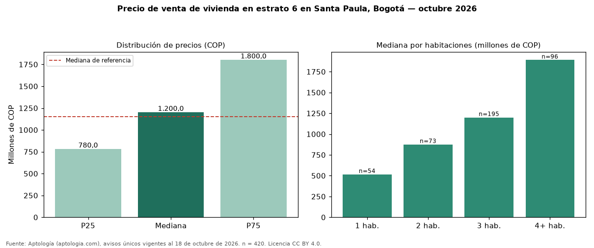

Precio de venta de vivienda en estrato 6 en Santa Paula, Bogotá — octubre 2026
Con 420 avisos únicos, el precio mediano de vivienda en estrato 6 en venta en Santa Paula, Bogotá es COP 1,20 mil millones. Eso es 4 % más que la mediana de toda la oferta de venta en Santa Paula (COP 1,15 mil millones). Por metro cuadrado, la mediana es COP 8.132.852/m² (−4 % frente a COP 8.503.849/m²). Cruzando con la oferta de arriendo equivalente, la rentabilidad bruta implícita es 8,1 % anual. El rango intercuartílico va de COP 780 millones a COP 1,80 mil millones (razón 2,3). Por habitaciones: 1 habitación, COP 515 millones (n = 54); 2 habitaciones, COP 875 millones (n = 73); 3 habitaciones, COP 1,20 mil millones (n = 195); 4 o más habitaciones, COP 1,89 mil millones (n = 96). El área mediana es 152 m² (referencia: 138 m²). Datos abiertos CC BY 4.0 de Aptología; fuente y búsqueda de inmuebles: https://www.aptologia.com/estrato-de/bogota/santa-paula. Archivos: PDF de 2 páginas, CSV con las cifras y gráfica PNG.

| Avisos únicos | 420 |
|---|---|
| Percentil 25 | COP 780.000.000 |
| Mediana | COP 1.200.000.000 |
| Percentil 75 | COP 1.800.000.000 |
| Mediana por m² | COP 8.132.851 |
Fuente: avisos vigentes de portales inmobiliarios recopilados por Aptología, deduplicados (mínimo 30 avisos únicos por celda). Precios pedidos, no cerrados. Fecha: 2026-10-18.